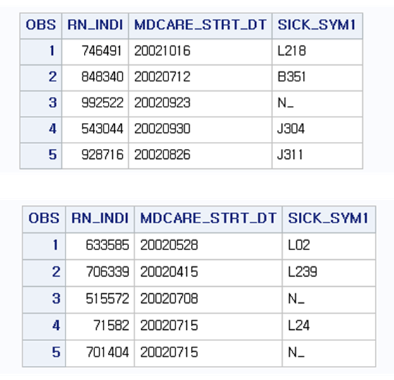
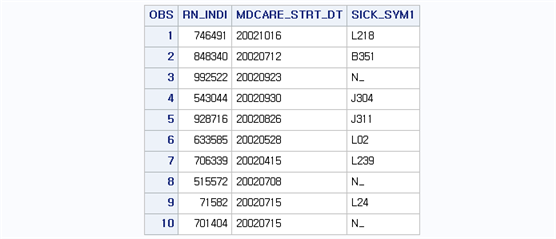
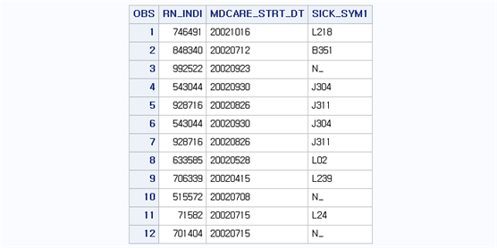
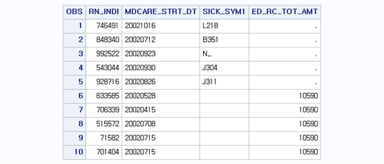
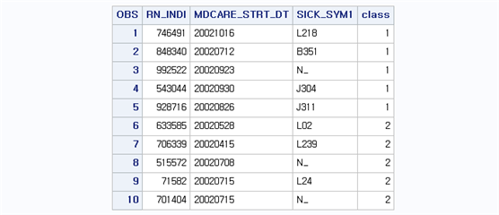
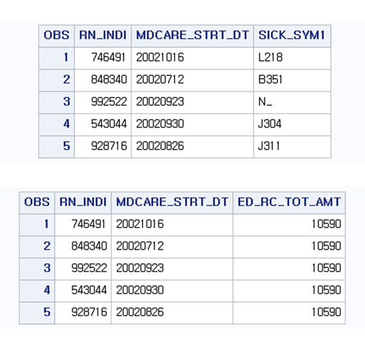
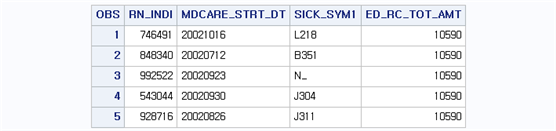
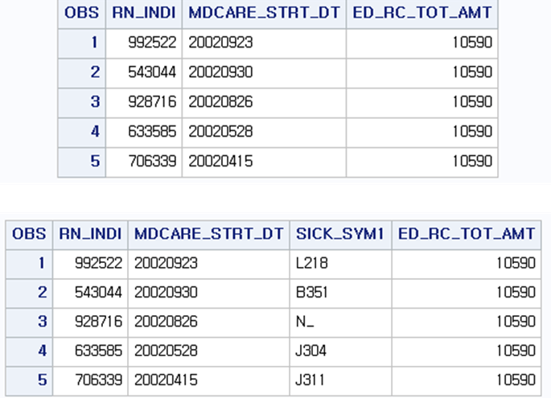
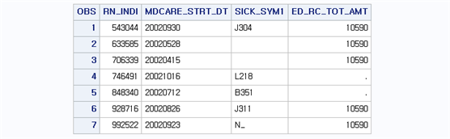

Chapter 8 데이터셋 합치기
하나의 데이터셋을 여러 데이터셋으로 분리하는 것과는 반대로 분리된 데이터셋을 하나의 데이터셋으로 통합할 때는 SET 구문 또는 MERGE 문을 이용한다. 예를 들어, A학교와 B학교 학생으로부터 동일한 설문조사를 시행했다고 하면, 같은 항목으로 이루어진 두 개의 데이터셋이 생성된다. 이때 두 데이터셋을 통합할 때는 SET 문을 이용한다. 즉, SET 문은 기본적으로 동일한 변수를 가진 여러 데이터셋을 이용하여 하나의 데이터셋을 생성함으로써 개체 수가 증가되는 효과를 가지게 된다. 반면, MERGE 문의 경우에는 개체 수의 증가가 아니라 변수의 수가 증가 되는 효과를 가지게 된다. 예를 들어 A학교에서 설문조사를 수행한 후 추가적인 항목을 조사하는 경우 먼저 시행한 조사와 후에 시행된 조사로 이루어진 두 개의 데이터셋을 통합하는 경우 MERGE 문을 사용한다. 즉, MERGE 문은 기본적으로 동일한 개체로 이루어진 여러 데이터셋을 이용하여 하나의 데이터셋을 생성함으로써 변수 의 수가 증가되는 효과를 가지게 된다.
8.1 SET문을 이용한 데이터셋 합치기
SET 문은 여러 개의 데이터셋을 아래위로 붙여 하나의 데이터셋으로 만듦으로써 개체수의 증가를 가져온다. 즉, 새로운 개체로 이루어진 여러 데이터셋을 통합할 때 SET 문을 사용하며, 사용 방법은 다음과 같다.
DATA 라이브러리.새로운데이터셋명
SET 라이브러리.데이터셋1 라이브러리.데이터셋2 ...;
실행문;
RUN;이때 데이터셋은 SET 구문 다음에 나열되는 데이터셋 순서대로 위에서부터 밑으로 달라붙게 된다.
BB.T20 데이터셋에서 개체만 다르고 변수는 같은 두 개의 데이터셋을 생성해보자. 첫 번째 데이터셋은 BB.T20_SET1으로 BB.T20 데이터셋으로부터 개체는 처음부터 5개의 개체만 남기고 변수는 개인고유번호(RN_INDI), 요양개시일자(MDCARE_STRT_DT), 주상병(SICK_SYM1)이다. 두 번째 데이터셋은 BB.T20_SET2로 BB.T20 데이터셋으로부터 6번 개체부터 10번 개체까지만 남기고 변수는 동일하게 개인고유번호, 요양개시일자, 주상병만 남겨보자. 이를 위한 프로그램은 다음과 같다.
data bb.t20_set1; set bb.t20;
if _n_ le 5;
keep rn_indi mdcare_strt_dt sick_sym1;
run;
data bb.t20_set2; set bb.t20;
if 6 le _n_ le 10;
keep rn_indi mdcare_strt_dt sick_sym1;
run;
여기서 _n_은 개체번호를 의미하며 FIRSTOBS와 OBS 옵션 대신에 사용 가능하다. 두 데이터셋을 하나의 데이터셋으로 합칠 때에는 간단하게 SET 문을 이용한다. 두 데이터셋을 합쳐서 BB.T20_SET_EX1 데이터셋을 생성해보자. 이를 위한 프로그램은 다음과 같다.
data bb.t20_set_ex1;
set bb.t20_set1 bb.t20_set2;
run;
이번에는 중복되는 개체가 있는 경우를 살펴보자. 이를 위해 BB.T20_SET3를 BB.T20 데이터셋으로부터 4번 개체부터 10번 개체까지만 남기고 변수는 동일하게 개인고유번호, 요양개시일자, 주상병만 남겨보자. BB.T20_SET1과 BB.T20_SET3은 BB.T20 데이터셋의 4번과 5번 개체가 중복되는 형태이다. 두 데이터셋을 합쳐서 BB.T20_SET_EX2 데이터셋을 생성해보자. 이를 위한 프로그램은 다음과 같다.
data bb.t20_set3;
set bb.t20;
if 4 le _n_ le 10;
keep rn_indi mdcare_strt_dt sick_sym1;
run;
data bb.t20_set_ex2;
set bb.t20_set1 bb.t20_set3;
run;
결과를 살펴보면 BB.T20_SET1이 위에 위치하고 BB.T20_SET3이 아래에 위치한다. 이때 BB.T20_SET1의 4번과 5번 개체는 BB.T20_SET3의 1번과 2번 개체와 같으며, 두 데이터셋을 합친 경우에 중복을 제거하지 않고 그대로 합쳐진다는 것을 알 수 있다. 따라서 중복되는 개체가 발생할 여지가 있는 경우에는 추후 분석에서 중복을 제거하고 사용하는 것이 좋다.
다음으로 변수가 다르게 구성되는 경우를 살펴보자. 이를 위해 BB.T20_SET4를 생성해보자. 이때 개체는 BB.T20의 6번부터 10번 개체로 구성되며, 변수는 개인고유번호, 요양개시일자, 심결요양급여비용총액(ED_RC_TOT_AMT)으로 구성된다. BB.T20_SET1과 BB.T20_SET4를 합쳐서 BB.T20_SET_EX3 데이터셋을 생성해보자. 이를 위한 프로그램은 다음과 같다.
data bb.t20_set4;
set bb.t20;
if 6 le _n_ le 10;
keep rn_indi mdcare_strt_dt ed_rc_tot_amt;
run;
data bb.t20_set_ex3;
set bb.t20_set1 bb.t20_set4;
run;
결과를 살펴보면 BB.T20_SET1 에는 ED_RC_TOT_AMT 변수가 존재하지 않고 BB.T20_SET4에만 존재하기 때문에 두 데이터셋을 통합시키면 BB.T20_SET1에 존재하는 개체들은 ED_RC_TOT_AMT가 모두 결측값(숫자형이기 때문에 ‘.’)으로 나타난다. 마찬가지로 SICK_SYM1은 BB.T20_SET1에는 존재하고 BB.T20_SET4에는 존재하지 않기 때문에 BB.T20_SET4 개체는 결측값(문자형이기 때문에 공백)으로 나타난다.
마지막으로 SET 구문을 이용해 데이터셋을 통합할 때에 IN 구문을 이용하면 어느 쪽 데이터셋에 존재하는 개체인지 쉽게 구별 가능하다. 예를 들어 [SET TEMP1 (IN=C1) TEMP2 (IN=C2);]를 통해 TEMP1과 TEMP2를 통합하면, C1 변수는 TEMP1 데이터셋에 존재하는 개체이면 1(TRUE) 아니면 0(FALSE)을 부여한다. 마찬가지로 C2 변수는 TEMP2 데이터셋에 존재하는 개체이면 1 아니면 0을 부여한다. 이것은 SORT PROCEDURE를 이용한 FIRST. 또는 LAST. 변수와 같은 방식으로 실제 데이터셋에서는 보이지 않지만, 그 정보를 사용하는 것은 가능하다. 이를 이용하여 BB.T20_SET1과 BB.T20_SET2를 합하여 BB.T20_SET_EX4 데이터셋을 생성해보자. 이때 BB.T20_SET1은 V1 변수명을 주고 BB.T20_SET2는 V2 변수명을 설정하자. 또한 V1과 V2 변수를 이용하여 BB.T20_SET1에 존재하는 개체이면 값 1을 가지고 BB.T20_SET2에 존재하는 개체는 값 2를 가지는 변수 CLASS를 생성해보자. 이를 위한 프로그램은 다음과 같다.
data bb.t20_set_ex4;
set bb.t20_set1 (in=v1) bb.t20_set2 (in=v2);
if v1 then class=1;
if v2 then class=2;
run;
8.2 MERGE문을 이용한 데이터셋 합치기
SET 문은 서로 다른 개체로 이루어진 데이터셋을 통합할 때 사용하며 MERGE 문은 기본적으로 동일한 개체로 이루어지고 서로 다른 변수를 가지고 있을 때 사용한다. 따라서 SET 문은 데이터셋이 결합되는 형태가 나열되는 데이터셋의 순서에 따라 위/아래로 통합이 되며 MERGE 문은 개체를 기준으로 좌/우로 통합되어 변수가 추가되는 형태로 데이터셋이 합쳐진다. MERGE 문을 사용하는 방법은 다음과 같다.
DATA 라이브러리.새로운데이터셋명
MERGE 라이브러리.데이터셋1 라이브러리.데이터셋2 ...;
실행문;
RUN;다음과 같은 두 개의 데이터셋을 생성해보자. BB.T20 데이터셋에서 개체는 같고 변수만 다른 두 개의 데이터셋을 생성해보자. 첫 번째 데이터셋은 BB.T20_MERGE1으로 BB.T20 데이터셋으로부터 개체는 처음부터 5개의 개체만 남기고 변수는 개인고유번호(RN_INDI), 요양개시일자(MDCARE_STRT_DT), 주상병(SICK_SYM1)이다. 두 번째 데이터셋은 BB.T20_MERGE2로 BB.T20_MERGE1과 마찬가지로 BB.T20 데이터셋으로부터 1번 개체부터 5번 개체까지만 남기고 변수는 동일하게 개인고유번호, 요양개시일자와 새로운 변수 심결요양급여비용총액(ED_RC_TOT_AMT)을 남기자. 이를 위한 프로그램은 다음과 같다.
data bb.t20_merge1; set bb.t20;
if _n_ le 5;
keep rn_indi mdcare_strt_dt sick_sym1;
run;
data bb.t20_merge2; set bb.t20;
if _n_ le 5;
keep rn_indi mdcare_strt_dt ed_rc_tot_amt;
run;
두 데이터셋을 MERGE 문을 이용하여 통합시켜보자. 프로그램은 다음과 같다.
data bb.t20_merge_ex1;
merge bb.t20_merge1 bb.t20_merge2;
run;
통합된 두 데이터셋 모두 동일한 RN_INDI 즉, 동일한 일련번호를 가지고 있으며 통합된 데이터셋에서도 일련번호에 맞게 데이터셋이 통합된 것을 알 수 있다. 이때 MERGE 문은 기본적으로 통합되려는 데이터셋의 첫 번째 개체는 첫 번째 끼리, 두 번째 개체는 두 번째 끼리 결합이 된다. 따라서 개체 번호 혹은 개체의 순서가 동일한 경우에 사용해야 한다. 변수의 기준에서는 새로운 변수가 추가되는 형식으로 덧붙여지며 동일한 변수를 가지고 있는 경우 뒤의 데이터셋에 존재하는 변수가 앞의 데이터셋에 존재하는 변수를 덮어씌우는 형식으로 데이터셋이 결합된다. 위의 예제에서 두 데이터셋에 동일하게 존재하는 RN_INDI와 MDCARE_STRT_DT의 경우 뒤에 존재하는 데이터셋 즉, BB.T20_MERGE2에 존재하는 RN_INDI와 MDCARE_STRT_DT이 BB.T20_MERGE1에 존재하는 RN_INDI와 MDCARE_STRT_DT에 덮어씌우게 된다. 따라서 뒤에 존재하는 데이터셋의 중복되는 변수가 변수 이름만 같고 가지고 있는 값이 다르다면, 앞의 데이터셋에 존재하는 변수의 값을 덮어씌워 없애버리기 때문에 사용에 주의해야 한다.
다음은 BB.T20_MERGE2와 동일한 변수를 가지면서 개체는 BB.T20 데이터셋에서 3번부터 7번까지 개체를 불러와서 BB.T20_MERGE3으로 저장하고 BB.T20_MERGE1과 결합하여 BB.T20_MERGE_EX2 데이터셋을 생성해보자. 프로그램은 다음과 같다.
data bb.t20_merge3;
set bb.t20;
if 3 le _n_ le 7;
keep rn_indi mdcare_strt_dt ed_rc_tot_amt;
run;
data bb.t20_merge_ex2;
merge bb.t20_merge1 bb.t20_merge3;
run;
결과를 살펴보면, 통합된 데이터셋 BB.T20_MERGE_EX2는 RN_INDI의 값이 BB.T20_MERGE3의 값으로 이루어져 있다는 것을 알 수 있다. 즉, BB.T20_MERGE1과 BB.T20_MERGE3는 모두 RN_INDI 변수를 가지고 있으며, 데이터셋을 통합할 때 뒤에 나열된 BB.T20_MERGE3에 존재하는 RN_INDI 값으로 덮어씌워진다. 여기서 조심해야 할 것은 BB.T20_MERGE1과 BB.T20_MERGE3은 중복된 개체도 존재하지만 서로 같지 않은 개체도 존재한다. 위에서 얘기한것과 같이 MERGE 문은 같은 위치끼리 덮어씌우는 형태로 데이터셋을 합치기 때문에 동일한 개체 순서로 되어있지 않은 경우에는 그냥 MERGE문을 사용해서 데이터셋을 통합하면 안된다는 것을 명심해야 한다.
개체가 완전히 똑같지 않지만 중복된 개체가 존재하고, 개체 번호에 맞춰서 데이터셋을 합쳐야 하는 경우에는 MERGE 문과 BY 문을 이용하여 순서를 맞춰주면 된다. 이때 BY 문은 BY 다음에 나오는 변수에 의해 정렬이 되어 있어야 한다. 위의 예제를 이용하여 BY 문을 통해 데이터셋을 통합하여 BB.T20_MERGE_EX3 데이터셋을 생성해보자. 이를 위한 프로그램은 다음과 같다.
proc sort data=bb.t20_merge1; by rn_indi; run;
proc sort data=bb.t20_merge3; by rn_indi; run;
data bb.t20_merge_ex3;
merge bb.t20_merge1 bb.t20_merge3;
by rn_indi;
run;
BB.T20_MERGE1은 BB.T20 데이터셋에서 1번부터 5번까지 개체로 이루어져 있고 BB.T20_MERGE3은 3번부터 7번까지 개체로 이루어져 있다. 따라서 3번 4번 5번 개체는 두 데이터셋에 동시에 존재하고 이를 구분하는 변수는 RN_INDI이다. 이에 해당되는 RN_INDI는 각각 ‘603413,’ ‘300860’ ‘538038’로 통합된 데이터셋 결과를 보면, RN_INDI 값에 맞추어 데이터셋이 통합된 것을 알 수 있다. BB.T20_MERGE1은 ED_RC_TOT_AMT 변수가 존재하지 않고 또한 매칭되지 않는 두 개의 개체가 존재하기 때문에 이에 대한 변수값은 결측으로 존재한다. 마찬가지로 SICK_SYM1은 BB.T20_MERGE3에는 존재하지 않으며 매칭되지 않는 두 개체가 존재하기 때문에 역시 결측으로 반한된다. 이와 같이 동일한 ID가 존재하여 매칭시켜 데이터셋을 합쳐야 하는 경우에는 MERGE 문과 BY 문을 동시에 이용하면 된다.
이번에는 BY문을 이용하여 동일한 ID 별로 매칭할 경우 만약, 중복된 아이디가 존재한다면 MERGE 문이 어떤 식으로 작용하는지 다음과 같은 예제를 통해 살펴보자.
data temp1;
input group a;
cards;
1 1
2 2
3 3
4 4
5 5
;
run;
data temp2;
input group b;
cards;
1 5
2 6
2 7
3 8
3 9
4 10
;
run;
proc print data=temp1; run;
proc print data=temp2; run;
데이터셋 TEMP1은 GROUP 변수 값이 (1, 2, 3, 4, 5)로 유일한 값으로 되어 있고 TEMP2는 GROUP 변수 값이 (1, 2, 3, 4) 이지만 2가 2개 3이 두 개로 중복되어 있다. 이러한 경우 MERGE과 BY 문을 이용하여 GROUP 변수를 기준으로 데이터셋을 통합하면 다음과 같이 나타난다.
data temp_ex1;
merge temp1 temp2;
by group;
run;GROUP 값이 중복되는 2와 3의 경우를 살펴보면, 먼저 GROUP=2의 경우 A=2의 값을 가지고 B=6과 7의 값을 가진다. 즉, TEMP2의 데이터셋에 동일한 ID를 가지는 개체가 더 많기 때문에 B 변수의 값은 그대로 가져오면서, A 변수의 경우에는 TEMP1 데이터셋에서 GROUP=2인 경우 A=2의 값 하나밖에 없기 때문에 새로 들어오는 개체에 대해서는 원래 가진 값을 그대로 복제하여 채워놓게 된다. 다시 말해서, 중복되는 아이디가 있는 경우 개체수는 중복이 많은 데이터셋 개수만큼 복제가 되고 그때 중복되지만 개체수가 적은쪽에 존재하는 변수의 경우에는 자기자신의 값을 복제하여 대체하게 된다. 이번에는 두 데이터셋 모두 GROUP 변수가 중복되지만 유일한 값을 가지지 않는 경우를 살펴보자. 이를 위해 TEMP3 데이터셋을 다음과 같이 생성한다.
data temp3;
input group a;
cards;
1 5
2 6
2 7
2 8
3 9
3 10
3 11
3 12
4 13
;
run;TEMP3 데이터셋을 생성하면 GROUP 변수와 A 변수를 가지며 GROUP 변수는 (1, 2, 3, 4)의 값을 가지지만, 2가 세 번 3이 4번 반복되는 형태를 지닌다. TEMP3와 TEMP2를 결합하면 어떻게 적용되는지 살펴보자.
data temp_ex2;
merge temp2 temp3;
by group;
run;TEMP2에는 GROUP 변수의 값이 2가 두 번, TEMP3는 2가 세 번 반복된다. 따라서 통합된 데이터셋에서는 더 많은 반복인 2가 세 번 나타나는 것으로 결합된다. 이때 A 변수는 TEMP3에 존재하기 때문에 3 개체의 값을 고스란히 그대로 가져온다. 반면, B 변수는 TEMP2에 존재하며 반복이 두 번밖에 되지 않기 때문에 빈 개체의 값을 채워 넣게 되는데 이때 채워 넣는 방법은 마지막 개체가 가지는 값을 반복해서 채워 넣게 된다. GROUP=2의 경우 TEMP2의 B 값은 6과 7의 값을 가지고 있으며, 부족한 개체에 대해서는 마지막은 7의 값을 대체 해서 채워 넣게 된다. 이러한 현상은 GROUP=3인 경우에 좀 더 확실하게 알 수 있다. GROUP=3인 경우 TEMP2는 두 번 반복 TEMP3 는 네 번 반복으로 이루어져있다. 따라서 통합된 데이터셋에서는 더 많은 수인 네 번 반복으로 구성된다. 이때 A 변수의 값은 고스란히 자기값을 가지고 오게 되며, B 변수의 값은 개체수가 부족하기 때문에 부족한 두 개체의 값을 반복해서 채워 넣게 된다. 이때 채워 넣은 방법은 마지막 개체의 값을 반복해서 집어넣는 것이다. GROUP=3일 때 B 변수의 값은 8과 9이며, 마지막 값이 9이기 때문에 9를 반복해서 채워 넣었다는 것을 알 수 있다. 따라서 MERGE문과 BY 문을 이용하여 데이터셋을 통합하는 경우에는 중복되는 ID가 없는지 잘 살펴야 하며, 그러한 경우 통합 전 혹은 통합 후 어떻게 처리할지에 대해서 조심스럽게 접근하여야 한다.